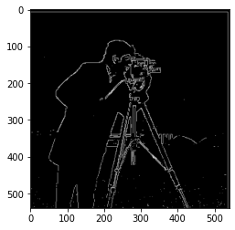
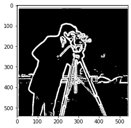
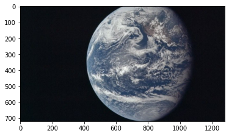
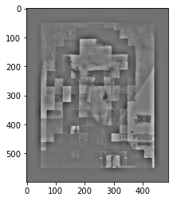

Proj 2, Aaron Chen
Overview
This project was all about image filters and how we could use the properties
of frequencies to do classic image operations like blurring, straightening,
sharpening, etc.
1.1
Pictured here is the original image, and then taking the partial
derivatives with respect to x or y. We used convolving with dx and dy
as defined by [1,-1] and [1,-1].T
Gradient magnitude computation was calculated by taking the sqrt of the
sum of the derivatives squared. I also binarized the image to hopefully
make it more visually appealing.

1.2
What differences do I see? I see that there is much less noise
and that we can see the edges much clearly. This is because Guassian
filter is a low pass filter and takes out high frequency noise.
Yes, they have the same resutls.
Here we have, in order, the x gradient, y gradient, and gradient magnitude.

Here are the DoG filters: x, andy.
1.3
Note that due to my hardware I was unable to try many angles...
thus my search space was much more limited to a few angles. I could have
waited longer to run but it was taking 10 minutes to run for 20 angles.
Here we show image straightening along with a histogram of numbre of
gradient angles that specific image has.
Facade before straightening
Facade after straightening

leaning tower of pisa pre-straightening
leaning tower of pisa post-straightening
Unknown building prestraightened

unknown building poststraightened
earth before

earth after
this failed as Earth is just circular and there's not
much you can do to find edges inside the clouds/oceans.
2.1
In this part we mess with blurring and hybrid images!
Taj mahal original, and sharpened
Taj mahal blurred, and then sharpened. Notice we lost
a bit of detail... I think. Can't really tell for sure.
cat sharpened. I think there's little difference...
a different cat sharpened. You can tell the difference in the paw.
2.2
My friends, fused together! We use a gaussian as a low pass filter and
a laplacian as a high pass filter and add the results of convolving the respective
images to get an image that has high frequency near, and low frequency details far.

me and csgo character fused together.this fails because the features of the mask is just a solid color
block once its a little bit blurry, so it is visually hard to tell what
the two images are.


fft of me, fft of csgo char, fft of hybrid
2.3
In this part we create Laplacian and Gaussian stacks in order to separate
the hybrid images that we created in the previous part.
Lincoln picture, gauss stack.

Lincoln picture, laplacian stack.

Hybrid image, Gauss & laplacian stacks, respectively

2.4
In this part we combine images according
to the paper linked in the project. In short, we use a laplacian & Gaussian stack
along with a gaussian stacked mask to weigh the two, superimposing them and blurring
the middle with the gaussianed mask.
My version of the orapple...
Combining the hand and eye, with the mask for it
Some progress photos... Shows them filtered with high/low filters


Apple and mold fused together!
conclusion
I learned a ton! I think learning about frequencies and the effects
that you can do with them was the most rewarding. The fusing was very fun.